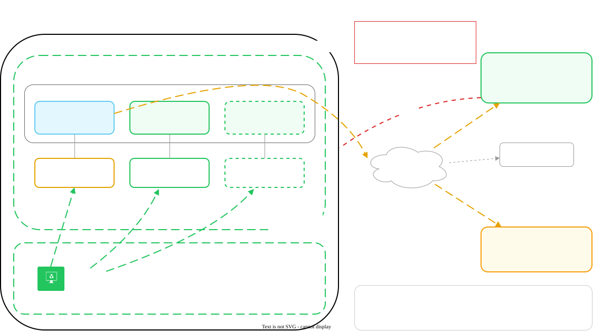
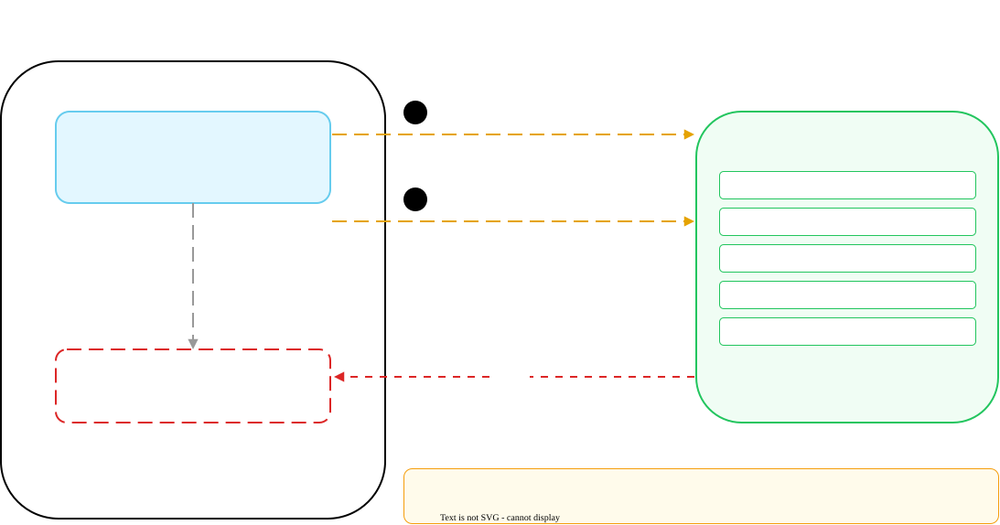

Prisma AIRS AI Gateway Hybrid Lab on Azure
End-to-end guide: an empty Azure subscription through a verified AI Gateway data plane on AKS, with Keycloak identity, a Windows traffic generator, and JWT-authenticated application traffic.
This guide is management-first. Everything configurable in Strata Cloud Manager is configured in Phase 2, before a single Azure resource exists, because the gateway's Helm values file is produced by SCM and the deployment cannot start without it.
The design model is a single-region hub: one AKS cluster carrying the gateway data plane and
the identity provider, one VNet, and a Windows VM on a peer subnet acting as the traffic
source. There is no hub-and-spoke peering and no inbound path from the management plane,
because the airs-gw integration is outbound only.
Infrastructure is deployed by automation, not by hand. Two parallel implementations are provided and either one builds the whole lab: a Terraform root module and a set of native Az PowerShell scripts. Pick one in Phase 4 and the tab selection follows you through Phase 5.
This guide uses the airs-gw chart from
https://portkey-ai.github.io/airs-gw-helm, which is the chart the SCM Gateway
Registration wizard generates a values.yaml for. It is a different chart from
portkey-ai/gateway, the one documented on the platform deployment pages. The two
use different value keys, different registries, and different release names. Do not mix them.
Any reference you find to docker.io/portkeyai/gateway_enterprise belongs to the
other chart.
Architecture Overview
The lab is a self-hosted AI Gateway data plane running on AKS, registered to and managed by Strata Cloud Manager. Application traffic enters the gateway, the gateway calls the upstream LLM provider using credentials stored in SCM's Model Catalog, and telemetry flows back out to the management plane. Nothing reaches into the cluster from outside.
Topology: what runs where, and which direction each link is opened from.

| Component | Specification | Estimated cost per month |
|---|---|---|
| AKS cluster | 1 x Standard_D2als_v7 (2 vCPU, 4 GiB), no zone pinning | ~$35 |
| AIGW data plane | airs-gw chart, bundled Redis, LoadBalancer Service | $0, runs on AKS |
| Keycloak | Pod on AKS, internal LoadBalancer Service | $0, runs on AKS |
| Windows VM | Standard_D2als_v7 (2 vCPU, 4 GiB), RDP | ~$70 |
| Networking | VNet, load balancers, 3 Standard public IPs | ~$15 |
| Total | ~$120 |
Sized for a $200 Azure free-credit subscription, which runs the lab for roughly
six weeks. Deallocating the Windows VM between sessions roughly halves the burn.
Check the credit balance at
Azure Portal, Cost Management
before starting. Less than $120 remaining means the lab will not survive a
full month, so plan to tear down between sessions.
| From | To | Path | Why |
|---|---|---|---|
| Windows VM | Gateway LoadBalancer | VNet, port 80 | Application traffic |
| Windows VM | Keycloak internal LoadBalancer | VNet, port 80 | Browser login for the JWT demo |
| Gateway pod | api.portkey.ai | Outbound HTTPS | Config sync, analytics, heartbeat |
| Gateway pod | registry.portkey.ai | Outbound HTTPS | Image pull |
| Gateway pod | LLM provider | Outbound HTTPS | Upstream completions |
| Demo app pod | Keycloak | Cluster DNS | OIDC discovery and token exchange |
| SCM backend | Your cluster | No path | This integration is outbound only |
That last row drives one of the most consequential decisions in this guide. Because SCM's backend cannot reach into the cluster, it also cannot read a log store that lives there. See the log store step in Phase 2.
Management plane: every link is opened by the gateway, which is what rules out a self-hosted log store.

After deployment, confirm the outbound path from inside a gateway pod. A response code of any kind proves reachability:
kubectl exec -n airs-gw <GATEWAY_POD> -- \
curl -sS -o /dev/null -w '%{http_code}\n' https://api.portkey.ai| Range | Purpose | Notes |
|---|---|---|
10.0.0.0/16 | VNet address space | |
10.0.1.0/24 | aks-subnet | Azure CNI assigns both node and pod addresses from here |
10.0.1.250 | Keycloak internal LoadBalancer | Pinned so KC_HOSTNAME can be set before the Service exists |
10.0.1.251 | JWT demo app internal LoadBalancer | Pinned so the Keycloak redirect URI can be set in one pass |
10.0.2.0/24 | vm-subnet | Windows traffic generator |
172.16.0.0/16 | Kubernetes service CIDR | Outside the VNet on purpose |
172.16.0.10 | Cluster DNS | Derived from the service CIDR |
AKS defaults its service CIDR to 10.0.0.0/16, which is exactly the VNet
address space above. Cluster creation then fails with
ServiceCidrOverlapExistingSubnetsCidr. Both automation paths set
172.16.0.0/16 instead and derive the DNS service address from it, so the two
cannot drift apart.
After the cluster exists, confirm the ranges:
az aks show --resource-group aigw-lab-rg --name aigw-lab-aks \
--query '{service:networkProfile.serviceCidr,dns:networkProfile.dnsServiceIp}' -o tableThe output reads 172.16.0.0/16 and 172.16.0.10.
A free-tier subscription imposes two limits that shape every sizing decision in this lab. Both are checked by the automation before anything is created, because Azure itself reports them only after several minutes of provisioning.
| Limit | Default value | Consumed by |
|---|---|---|
| Total Regional Cores | 4 vCPU | 1 AKS node (2) plus the Windows VM (2) |
| Standard public IPs | 3 | AKS outbound, gateway LoadBalancer, Windows VM |
The consequences are concrete. A two-node cluster and the Windows VM cannot run at the same time. Keycloak cannot have a public address, so it goes behind an internal load balancer and is reached from the Windows VM rather than from a browser on your workstation.
Requesting more cores through the Microsoft.Quota REST API fails after a short
delay with provisioningState: Failed and
error.code: ResourceNotAvailableForOffer. An Azure Portal support ticket is the
only route, and it is not instant. For a lab, scaling the node pool is faster and costs
nothing.
Read your actual limits before committing to a size:
SUB=$(az account show --query id -o tsv)
az rest --method get \
--url "https://management.azure.com/subscriptions/$SUB/providers/Microsoft.Compute/locations/centralus/usages?api-version=2024-07-01" \
--query "value[?name.value=='cores']" -o table
A limit of 4 confirms the free-tier defaults in this guide apply unchanged. A
higher number means the footprint can grow, and Phase 4 shows which variables to raise.
Phase 1: Prerequisites
Four things have to be true before any automation runs: the tooling is installed, the Azure subscription is signed in and has its resource providers registered, the regional quotas are known, and the chosen VM size is actually offered in the region.
Both automation paths need kubectl and helm, because the Kubernetes
layer has no Azure-native equivalent. Beyond that, the Terraform path needs the Terraform CLI
and the PowerShell path needs the Az modules.
brew install azure-cli kubectl helm terraform
az version
kubectl version --client
helm version
terraform versionTerraform 1.5.0 or newer. The module uses terraform_data preconditions, which landed in 1.4.
Install-Module Az.Accounts, Az.Resources, Az.Network, Az.Aks, Az.Compute -Scope CurrentUser
Install-Module Az.ContainerRegistry -Scope CurrentUser # only needed for the Phase 6 demo
az aks install-cli # kubectl
winget install Helm.Helm # or: brew install helm
PowerShell 7 or newer. The scripts use Set-StrictMode -Version Latest and the
$IsMacOS automatic variable, neither of which behaves the same under Windows
PowerShell 5.1.
Every version command returns a version string rather than
command not found. The automation re-checks this in Phase 4 and fails with an
install hint rather than a stack trace.
Free-tier and newly created subscriptions frequently have the providers AKS depends on left
unregistered. The symptom appears several minutes into cluster creation as
MissingSubscriptionRegistration, so registering up front is worth the two
minutes.
az login
az account set --subscription "<SUBSCRIPTION_ID>"
for ns in Microsoft.ContainerService Microsoft.Network Microsoft.Compute Microsoft.Storage; do
az provider register --namespace "$ns"
done
az provider show --namespace Microsoft.ContainerService --query registrationState -o tsvConnect-AzAccount
Set-AzContext -Subscription '<SUBSCRIPTION_ID>'
'Microsoft.ContainerService', 'Microsoft.Network', 'Microsoft.Compute', 'Microsoft.Storage' |
ForEach-Object { Register-AzResourceProvider -ProviderNamespace $_ }
(Get-AzResourceProvider -ProviderNamespace Microsoft.ContainerService)[0].RegistrationState
Both automation paths create a role assignment, granting the AKS cluster identity Network
Contributor on the VNet so internal load balancers can be placed. Creating a role assignment
needs Owner or User Access Administrator on the subscription. A Contributor-only account
fails with AuthorizationFailed on
Microsoft.Authorization/roleAssignments/write, and the Keycloak Service then
never gets an address. Check your own role:
az role assignment list --assignee "$(az account show --query user.name -o tsv)" \
--query "[].roleDefinitionName" -o tsv
Without that level of access, ask an administrator to create the assignment after the
cluster exists. The command is in the Troubleshooting entry on
SyncLoadBalancerFailed.
The registration state reads Registered, not Registering.
Registration takes a minute or two per provider and only has to happen once per
subscription.
Both automation paths carry a quota budget that fails the deployment before anything is created when the requested footprint will not fit. The budget starts at the free-tier defaults, so a subscription with more headroom needs the numbers corrected or the lab builds smaller than it has to.
- Read the Total Regional Cores limit for your region.
- Read the Standard public IP limit for the same region.
- Note both. Phase 4 sets them as inputs.
SUB=$(az account show --query id -o tsv)
LOCATION=centralus
# Total Regional Cores
az rest --method get \
--url "https://management.azure.com/subscriptions/$SUB/providers/Microsoft.Compute/locations/$LOCATION/usages?api-version=2024-07-01" \
--query "value[?name.value=='cores'].{name:name.value,used:currentValue,limit:limit}" -o table
# Standard public IPs
az network list-usages --location $LOCATION \
--query "[?contains(name.value,'PublicIPAddresses')].{name:name.localizedValue,used:currentValue,limit:limit}" -o tableBoth commands return a numeric limit. A cores limit of 4 and a public IP limit of 3 match the defaults in this guide. If a limit is higher, record it for Phase 4.
Standard_D2als_v7 is the size this lab was validated on, for both the AKS nodes
and the Windows VM. It is not an arbitrary choice. Standard_B2s and
Standard_B2als_v2 were both rejected on the subscription this lab was built on,
with VMSizeNotSupported, RestrictedVMSize, and later
SkuNotAvailable.
az vm list-skus --location centralus --size Standard_D2als --output table
# Restrictions on a specific size. An empty result means it is usable.
az vm list-skus --location centralus --size Standard_D2als_v7 \
--query "[0].restrictions" -o json
A size can pass this check and still fail at create time with SkuNotAvailable
and the message "Following SKUs have failed for Capacity Restrictions". That is a regional
capacity problem rather than a quota problem, and the fix is a different size or a different
region. If that happens, the Azure Portal's AKS creation wizard is a useful oracle: it
filters its size list to what your subscription can actually use. Read a working size from
there, then pass it to the automation.
[] comes back from the restrictions query. An array that is not empty gives the restriction type and the related zones or locations. If you see this, select a different size.
Phase 2: Configure Strata Cloud Manager
Everything in this phase happens in the SCM browser UI, and all of it happens before Azure is
touched. The deployment cannot start without the values.yaml produced here, and the
first test request cannot succeed without the provider and the API key.
The file downloaded in the first step carries your container registry password and your
PORTKEY_CLIENT_AUTH key. Never commit it. Both automation paths list it in
.gitignore, and both read it from disk rather than copying its contents into
source. Keep a backup in a password manager.
Registration creates the identity the data plane uses to report in to the management plane, and produces the Helm values file that carries that identity.
- Open Strata Cloud Manager and go to AI Gateway > Admin Settings > Gateway Registration.
- Click Register Gateway and give it a name, for example
aigw-azure-lab. - Work through to the Configure Gateway Deployment screen.
- Download
values.yaml. - Record your Organisation ID from the browser address bar:
https://stratacloudmanager.paloaltonetworks.com/<org_id>/.
The downloaded file looks like this, with real values in place of the placeholders:
imageCredentials:
- name: airsgatewayregistrycredentials
create: true
registry: "https://registry.portkey.ai"
username: <populated by the wizard>
password: <populated by the wizard>
environment:
create: true
secret: true
data:
PORTKEY_CLIENT_AUTH: <populated by the wizard>
ORGANISATIONS_TO_SYNC: <populated by the wizard>
ORGANISATIONS_TO_SYNC and the Organisation ID field use the
vendor's spelling. These are literal names, not typographical errors, and renaming them
breaks the deployment.
The file that you downloaded contains all four of imageCredentials, registry.portkey.ai, PORTKEY_CLIENT_AUTH, and ORGANISATIONS_TO_SYNC. If the file does not have one of them, the wizard did not complete. Register a new gateway and download the file again.
The gateway holds no provider credentials of its own. It reads them from SCM over the outbound config sync, which means the provider has to exist before the first request works.
- Go to AI Gateway > Model Catalog. Older SCM versions label this Integrations.
- Add your provider, for example OpenAI, with a real and currently active API key.
- Give the integration a slug.
openaiis the slug this guide assumes throughout. - Save.
A character above U+00FF anywhere in a stored provider key crashes the gateway
on every single request, before it ever looks at the request body, with
TypeError: Cannot convert argument to a ByteString. The usual cause is a shell
prompt glyph such as ❯ picked up while copying from a terminal. Pasting a
key of the wrong type into the field, for example an OpenAI key into an Anthropic slot,
produces the same crash.
Organizations with block_inline_config enabled, which is the common default,
reject the x-portkey-provider header with inline_provider_blocked.
Every request in this guide names the integration in the model field instead, as
@<slug>/<model>, and sends no provider header at all.
The integration appears in the Model Catalog list with the slug you chose and a status of active. The slug is what Phase 6 puts in the model field, so copy it exactly.
This key authenticates application traffic to the gateway. It is separate from the
PORTKEY_CLIENT_AUTH value in values.yaml, which authenticates the
gateway to the management plane.
- Go to AI Gateway > API Keys.
- Create a key, sometimes labeled a Gateway key or a service-account key.
- Copy it immediately. SCM shows the value once.
- Store it in a password manager, and export it in your shell for the Phase 6 tests.
# Keeps the key out of shell history and out of the guide's copy buttons.
read -rs SCM_WORKSPACE_KEY && export SCM_WORKSPACE_KEYecho ${#SCM_WORKSPACE_KEY} returns a length that is more than zero. Phase 6 tests the key against the gateway. This is not possible now, because the gateway does not exist yet.
The chart supports a self-hosted log store: bundled MinIO, or your own S3, Azure Blob, or GCS
bucket, selected with LOG_STORE. This guide leaves it unset, and that is a
deliberate decision rather than an omission.
| Option | Write path | SCM log detail view | Where bodies live |
|---|---|---|---|
LOG_STORE unset (this guide) | Works | Works | Palo Alto Networks SCM backend, Americas region |
LOG_STORE: azure | Works | Fails every time | Your storage account |
| Bundled MinIO | Image will not pull | n/a | n/a |
Two independent things rule out self-hosting on this integration path. MinIO has locked both
docker.io/minio/minio and quay.io/minio/minio behind authentication
for every tag including latest, so the bundled option no longer pulls. Pointing
LOG_STORE at your own bucket does write correctly, verified directly against a
test Azure Storage Account, but clicking a log entry in SCM returns
Error: Resource not found. Please try again. every time. The Dashboard needs its
backend to read the body back, and on an outbound-only integration there is no path for it to
reach a store inside your environment.
Leaving LOG_STORE unset means full prompt and response bodies are held by the
SCM backend rather than staying in the customer's environment. For a lab that wants working
logs, that is the right trade. For a deployment where data residency is a requirement, the
trade-off has to be a documented decision, and the person making it needs to know that
self-hosting the store currently breaks log viewing rather than relocating the data.
You do not have to do anything to accept the default. To confirm your choice, make sure that the generated overlay has no LOG_STORE key:
grep -c LOG_STORE terraform/values.yaml || echo "not present, correct"Phase 3: Review Checkpoint
A hard gate. Everything below has to be true before any automation runs. Each item that is false costs between ten minutes and a full rebuild to discover later.
- You installed the Azure CLI,
kubectl, andhelm. Each one reports a version. - You installed Terraform 1.5+ or PowerShell 7 with the Az modules for the path that you selected.
- Signed in to the correct subscription, confirmed with
az account showorGet-AzContext. - All four resource providers report
Registered. - Total Regional Cores limit recorded for the target region.
- Standard public IP limit recorded for the same region.
Standard_D2als_v7, or a substitute, returns an empty restrictions array.- You registered a gateway in SCM and downloaded
values.yaml. values.yamlcontainsimageCredentials,PORTKEY_CLIENT_AUTH, andORGANISATIONS_TO_SYNC.- An LLM provider exists in the Model Catalog with a slug and a freshly typed API key.
- You created a Workspace API Key and stored it.
- The log store decision is understood and accepted.
Every box has a tick. The automation checks most of these again in Phase 4. If a check fails, the automation does not start. A manual check here is faster than a failure message.
Phase 4: Prepare the Automation
Select one implementation. The two paths build the same lab. Each one is idempotent, and each one automates all the steps that it can. The remaining steps use the SCM browser interface. Your selection stays for the full page, and Phase 5 uses the tab that you select here.
- Terraform — state-tracked, declarative, and the only path that also automates the Phase 6 Keycloak realm. Pick this unless something rules it out.
- PowerShell — native Az cmdlets with no state file and no extra tooling to approve. Pick this on Windows, in a locked-down environment, or when reading sequential cmdlets is easier than reading HCL.
The module reads the wizard's file from the disk. It then adds a generated overlay on top of the file. Because of this, the credentials do not go through a Terraform variable. They also do not go into a tfvars file.
cd terraform
cp ~/Downloads/values.yaml .Helm merges value files from left to right with a deep map merge. The wizard's file goes first, then the overlay. The overlay adds the Service block, and later the JWT settings. Helm does not change the content of the wizard's file.
ls -l values.yaml && grep -c PORTKEY_CLIENT_AUTH values.yamlThe file exists and the grep returns 1. git status does not list it, because .gitignore covers it.
The defaults already describe the validated free-tier lab, so an empty
terraform.tfvars is a working one. Override only what your subscription
needs.
cp terraform.tfvars.example terraform.tfvars| Variable | Default | Change it when |
|---|---|---|
location | centralus | Another region suits you better |
lab_mode | true | Your quotas are above the free-tier defaults |
regional_core_quota | 4 | Step 1.3 reported a different number |
public_ip_quota | 3 | Step 1.3 reported a different number |
aks_node_count | 1 | You have 8 or more cores and want two nodes |
aks_node_vm_size | Standard_D2als_v7 | Step 1.4 showed restrictions |
keycloak_internal_lb | follows lab_mode | You have a spare public IP and want browser access |
keycloak_persistence | true | Rarely. Turning it off means the realm and its signing keys die with the pod |
rdp_source_address_prefix | * | Always, for anything longer than a short session |
enable_jwt_auth | false | You are going on to Phase 6 |
Changing a VM size means changing the matching vCPU count as well, or the quota precondition checks the wrong number and the deployment fails late instead of early:
aks_node_vm_size = "Standard_D4als_v7"
aks_node_vcpus = 4
The default of * opens port 3389 to the internet. Find your address with
curl -s ifconfig.me and set
rdp_source_address_prefix = "203.0.113.42/32".
terraform init
terraform console <<< 'local.cores_requested'
The console prints the vCPU total your settings will consume. On the defaults that is
4, which exactly fills a free-tier quota.
The plan runs four preconditions before it describes a single resource. Each one catches a failure that Azure otherwise reports several minutes into provisioning.
terraform plan| Precondition | What it prevents |
|---|---|
| values file present | A failed Helm release after the cluster is already built |
| vCPU budget | InsufficientVCPUQuota partway through VM creation |
| Public IP budget | PublicIPCountLimitReached on the last resource |
| Service CIDR does not match the VNet | ServiceCidrOverlapExistingSubnetsCidr |
The plan completes and reports about 20 resources to add. If a precondition fails, the message shows the calculation and gives the variable to change. Read the message before you run the command again.
The scripts read the wizard's file from disk and generate a small overlay beside it, so the credentials stay out of the parameter file.
cd powershell
Copy-Item ~/Downloads/values.yaml .Select-String -Path values.yaml -Pattern 'PORTKEY_CLIENT_AUTH' -QuietReturns True. .gitignore contains the file.
One file holds every input. The defaults describe the validated free-tier lab, so most runs change nothing but the RDP source address.
| Key | Default | Change it when |
|---|---|---|
Location | centralus | Another region suits you better |
LabMode | $true | Your quotas are above the free-tier defaults |
RegionalCoreQuota | 4 | Step 1.3 reported a different number |
PublicIpQuota | 3 | Step 1.3 reported a different number |
AksNodeCount | 1 | You have 8 or more cores and want two nodes |
NodeVmSize and NodeVcpus | Standard_D2als_v7, 2 | Step 1.4 showed restrictions. Change both together. |
KeycloakInternalLb | $true | You have a spare public IP and want browser access |
RdpSourceAddressPrefix | * | Always, for anything longer than a short session |
EnableJwtAuth | $false | You are going on to Phase 6 |
The default of * opens port 3389 to the internet. Find your address with
(Invoke-RestMethod ifconfig.me/ip) and set the prefix to
203.0.113.42/32.
Import-PowerShellDataFile ./Lab.parameters.psd1 | Format-List Prefix, Location, AksNodeCount, NodeVmSizeThe file parses and prints your values. A parse error names the line to fix.
This is the PowerShell equivalent of the Terraform preconditions, and it checks more besides: modules, tooling, sign-in, provider registration, live VM size availability, the quota budget against what Azure actually reports, and the contents of the values file.
./00-Test-Prerequisites.ps1
Where the configured quota and the reported quota disagree, the script says so rather than
guessing, because a stale RegionalCoreQuota silently shrinks the lab.
The script exits 0 and prints All prerequisites satisfied. A non-zero exit
lists each item with the exact command that fixes it.
Phase 5: Deploy and Verify the Infrastructure
One command builds the resource group, VNet, AKS cluster, the role assignment internal load balancers depend on, Keycloak, the gateway Helm release, and the Windows VM. Budget 15 to 20 minutes, most of it AKS and the VM.
terraform applyThe kubernetes and helm providers take their credentials from the AKS resource, which does not exist yet on the first run. Terraform normally resolves this by ordering, but in a fresh workspace it occasionally cannot. Build the cluster on its own, then run the full apply:
terraform apply -target=azurerm_kubernetes_cluster.aks
terraform applyThe apply completes with Apply complete! and an outputs block. If a resource has an error, the failure message gives its name. Run the apply again, and it continues from that resource.
terraform output
# Credentials are marked sensitive, so read them explicitly.
terraform output -raw windows_admin_password
terraform output -raw keycloak_admin_password
# Point the local kubectl at the new cluster.
eval "$(terraform output -raw kubectl_credentials_command)"| Output | What it is for |
|---|---|
scm_gateway_url | Pasted into SCM in Phase 6 |
scm_mcp_gateway_url | Pasted into SCM in Phase 6 |
gateway_health_check | A ready-made curl command |
keycloak_url | Internal address, reached from the Windows VM |
windows_vm_public_ip | RDP target |
quota_budget | What the footprint consumed against each limit |
gateway_public_ip shows an address rather than pending, and
kubectl get nodes lists the node in Ready state.
./Deploy-Lab.ps1
The orchestrator runs scripts 00 through 05 in order. Each one is
idempotent, so a failure can be fixed and the sequence resumed rather than restarted:
./Deploy-Lab.ps1 -StartAt Gateway
Valid resume points are Prerequisites, Infrastructure,
Keycloak, Gateway, WindowsVm, and
Verify. The failure message prints the right one.
The run ends with a green completion banner and the elapsed time, followed by the list of remaining SCM tasks. A failure names the step and the resume command.
Passwords are generated on first run and written to .lab-state.json, which is
gitignored and, on macOS and Linux, created with owner-only permissions. Re-running a
script reuses what is already there rather than rotating it.
$state = Get-Content .lab-state.json | ConvertFrom-Json
$state.GatewayIp
$state.KeycloakIp
$state.WindowsVmPublicIp
$state.WindowsAdminPassword
$state.KeycloakAdminPasswordTo supply your own passwords instead, write them into that file before the first run and the scripts will use them.
Each property returns a value. kubectl get nodes lists the node in
Ready state, because 01-New-LabInfrastructure.ps1 already
merged the credentials into your kubeconfig.
Common to both paths.
kubectl get nodes -o wide
kubectl get pods -n airs-gw
kubectl get pods -n keycloak
kubectl get svc -n airs-gw
kubectl get svc -n keycloakExpect a gateway pod, a Redis pod named airs-gw-redis-0, and a Keycloak pod.
| Pod status | Likely cause | Next step |
|---|---|---|
ImagePullBackOff | Registry credentials wrong, or no egress to registry.portkey.ai | Check imageCredentials in values.yaml, then test egress from a pod |
CrashLoopBackOff | A bad environment variable or an auth failure | kubectl logs <POD> -n airs-gw --tail=50 |
Pending | Not enough node capacity | kubectl describe pod <POD> -n airs-gw and read the Events |
Run kubectl describe svc keycloak -n keycloak. A
SyncLoadBalancerFailed event with a 403 AuthorizationFailed reading
the VNet subnet means the cluster identity is missing Network Contributor on the VNet. Both
automation paths grant it, and propagation takes a minute or two, so wait before
investigating further.
Every pod reads Running, and both Services show an EXTERNAL-IP
rather than <pending>. Keycloak's address is an internal one in the
10.0.1.0/24 range, which is correct.
GATEWAY_IP=$(kubectl get svc airs-gw -n airs-gw -o jsonpath='{.status.loadBalancer.ingress[0].ip}')
curl -s "http://${GATEWAY_IP}/v1/health"
The Service exposes two ports: 80 for the gateway itself at /v1/..., and 8788 for
MCP Gateway traffic, which this lab does not use.
Forward to the pod, not the Service. The bundled Redis pod shares the Service's selector
labels, so kubectl port-forward svc/airs-gw can land on Redis and return
nothing useful.
kubectl port-forward -n airs-gw pod/airs-gw-<hash> 8787:8787The health endpoint returns a response body rather than a connection error. Load balancer programming can lag the address assignment by about a minute, so one retry is normal.
Phase 6: Onboard Traffic
The gateway is running but SCM does not yet know where it lives, and nothing has sent it a request. This phase closes both gaps, then adds a JWT-authenticated application as an optional extension.
This tells SCM what base URL to show users. It is separate from the
PORTKEY_CLIENT_AUTH and ORGANISATIONS_TO_SYNC values already in
values.yaml, which drive the gateway's own outbound heartbeat.
- In SCM, go to Organization Details > General.
- Set Gateway URLs to
http://<GATEWAY_IP>/v1. - Set MCP Gateway URLs to
http://<GATEWAY_IP>:8788. - Save.
Both automation paths print these ready to paste:
# Terraform
terraform output -raw scm_gateway_url
terraform output -raw scm_mcp_gateway_url
# PowerShell
(Get-Content .lab-state.json | ConvertFrom-Json).GatewayIpBoth fields save without a validation error and show the addresses on reload.
The first request that returns a completion proves the whole chain at once: the load balancer, the gateway, the config sync that delivered the provider credential, and the upstream provider itself.
Request pattern: the five hops a single completion travels.
![API key request flow in five numbered steps. The Windows VM posts to the gateway LoadBalancer on port 80, the load balancer forwards to the airs-gw pod, the pod resolves the integration slug and calls the LLM provider over outbound HTTPS with the credential attached, the completion returns along the same path, and analytics and log bodies are pushed outbound to Strata Cloud Manager. The request carries the slug in the model field as at-openai slash gpt-4o-mini rather than in an x-portkey-provider header.](diagrams/inference-request-flow.svg)
GATEWAY_IP=$(kubectl get svc airs-gw -n airs-gw -o jsonpath='{.status.loadBalancer.ingress[0].ip}')
curl "http://${GATEWAY_IP}/v1/chat/completions" \
-H "Content-Type: application/json" \
-H "x-portkey-api-key: ${SCM_WORKSPACE_KEY}" \
-d '{
"model": "@openai/gpt-4o-mini",
"messages": [{"role": "user", "content": "Hello from the AIGW lab."}]
}'The PowerShell path has the same test built into its verification script:
./05-Test-LabDeployment.ps1 -WorkspaceApiKey $env:SCM_WORKSPACE_KEY
Note the model field. The integration slug goes there as @openai/gpt-4o-mini, and
no x-portkey-provider header is sent, for the reason covered in Phase 2.
A 200 with a normal OpenAI-style completion body. In one minute, the request appears in SCM under AI Gateway > Observability > Logs. Click the entry to open the detail view. The view shows the full request and response, and not Error: Resource not found. This confirms the log store decision from Phase 2.
The VM sits on the same VNet as the cluster, so it reaches both the gateway's public address and Keycloak's internal one. It is what makes the SCM analytics views worth looking at.
- Connect over RDP to the VM's public address, using the generated administrator credentials.
- Copy
powershell/Test-GatewayFromVm.ps1to the VM through the RDP clipboard. - Run it with the gateway address, the Keycloak address, and the Workspace API Key.
./Test-GatewayFromVm.ps1 `
-GatewayIp 203.0.113.10 `
-KeycloakIp 10.0.1.250 `
-WorkspaceApiKey '<WORKSPACE_API_KEY>' `
-Count 20 -DelaySeconds 3The script has no Az module dependency, so nothing extra needs installing on the VM. It checks connectivity to both services first, then sends completions drawn from a rotating prompt list.
Invoke-WebRequest http://<GATEWAY_IP>/v1 -UseBasicParsing returns a
Portkey Invalid API Key JSON body. That is the gateway answering, which proves
routing works. It is not a connectivity failure.
The script reports every request as succeeded, and SCM's analytics views populate within a minute or two. Failures print the gateway's own error text, which the Troubleshooting section decodes.
This extension replaces the shared Workspace API Key with per-user identity. A small Flask application logs the user in against Keycloak over OIDC and forwards the resulting access token to the gateway as a bearer credential. The application holds no gateway key and no provider key at all.
Terraform drives the whole thing: the realm, the client, the protocol mappers, the test user,
the application deployment, and the JWKS extraction. The application source is in
terraform/jwt-demo/app/.
Request pattern: the login round trip, the claims the token has to carry, and where the JWKS comes from.
![JWT authenticated request flow. A setup band across the top shows the Keycloak realm's RSA keypair exported as jwks_json, pasted by hand into Strata Cloud Manager, then pulled down by the gateway on its next config sync. Below, the browser on the Windows VM opens the demo app, is redirected to Keycloak at 10.0.1.250 to sign in, and the app exchanges the code for a token over cluster DNS. The app then calls the gateway with an Authorization Bearer header, and the gateway calls the LLM provider only after the signature and claims both check out. The token must carry a portkey_workspace claim holding the workspace slug and a scopes array.](diagrams/jwt-request-flow.svg)
The Deployment runs start-dev, whose H2 database writes to
/opt/keycloak/data. That path is mounted on a 4 GiB managed disk, so a pod
restart or a reschedule onto another node keeps the realm and keeps the RSA signing keys
behind the JWKS registered in SCM. Without that volume the failure is a quiet one: SCM goes
on serving the JWKS pasted earlier and rejects every token, with nothing in the gateway logs
pointing at Keycloak.
Destroying the stack destroys the disk with it, so a full rebuild still means re-running this apply and pasting a fresh JWKS. A Postgres backend is the next step up if the realm has to outlive the cluster.
-
Turn on gateway-side JWT validation and create the container registry. In
terraform/terraform.tfvars:enable_jwt_auth = true deploy_acr = trueterraform apply -
Build the application image and push it. AKS nodes use AMD64. On Apple Silicon the script
sets the platform:
cd jwt-demo ./build-and-push.sh -
Open a port-forward to Keycloak and leave it running. The Service is internal, so the admin
API is not otherwise reachable from your workstation:
kubectl port-forward -n keycloak svc/keycloak 8081:80 & -
Fill in the four necessary values, then apply:
cp terraform.tfvars.example terraform.tfvars # portkey_workspace_slug, gateway_url, keycloak_browser_url, # keycloak_admin_password, app_image terraform init terraform apply -
Paste the JWKS into SCM, at
Admin Settings > Organisation > Authentication > JWT Authentication,
choosing JWKS JSON:
terraform output -raw jwks_json | pbcopy -
From the Windows VM's browser, open the application at
http://10.0.1.251:5000, sign in astestuser, and send a prompt. The password comes fromterraform output -raw test_user_password.
The gateway is documented to fall back to the organization's default workspace when a token
carries no workspace claim. On this integration path that fallback does not resolve
reliably, and every chat completion returns
{"status":"failure","message":"Following keys are not valid: openai"} even
though the identical request works with a plain API key. The fix is to stop relying on the
fallback and embed the workspace explicitly, which is what the
portkey_workspace protocol mapper does.
Use the workspace slug, not the display name. In SCM, open
Workspace Control > your workspace > Settings; the slug is shown top
right and reads like ws-example-a-7c41b9, as distinct from a display name like
main_airs_workspace_4471206350. The Terraform variable validates that the value
starts with ws- and rejects a display name.
Keycloak builds its OIDC discovery document from the Host header unless
KC_HOSTNAME is set. The application calls Keycloak over cluster DNS while the
user's browser is redirected to the load balancer address, so without a pinned hostname the
two disagree on the issuer and the login round trip fails. The automation pins the internal
load balancer address up front, using a static address inside the AKS subnet, which is what
allows this to be configured in a single pass rather than read back off the Service.
The application page shows Gateway response (HTTP 200) with a real completion.
The claims table on the same page lists portkey_workspace holding your slug and
scopes holding ["completions.write"]. Either reading
MISSING means the protocol mapper did not apply, and re-running the apply
rebuilds it.
Phase 7: Post-Deployment Verification
The gateway reports in to the management plane over an outbound heartbeat roughly once a minute. The status in SCM is the single clearest indicator that the data plane and the management plane agree.
- Go to AI Gateway > Admin Settings > Gateway Registration.
- Check Connection Status reads Active rather than Unknown.
- Check Last Sync shows a recent timestamp rather than
--.
If the status stays Unknown after the pods have been running for a few minutes, test egress:
POD=$(kubectl get pods -n airs-gw -o name | grep -v redis | head -1)
kubectl exec -n airs-gw "${POD#pod/}" -- \
curl -sS -o /dev/null -w '%{http_code}\n' https://api.portkey.ai
kubectl get networkpolicies -n airs-gwConnection Status reads Active and Last Sync is within the last couple of minutes. The curl returns an HTTP status code of any kind, and the NetworkPolicy query returns no resources.
echo "=== Lab endpoints ==="
kubectl get nodes -o wide
kubectl get pods -A -o wide | grep -v kube-system
kubectl get svc -n airs-gw
kubectl get svc -n keycloak
kubectl get svc -n jwt-demo 2>/dev/nullThe PowerShell path does the same checks, plus a live chat completion, in one script:
./05-Test-LabDeployment.ps1 -WorkspaceApiKey $env:SCM_WORKSPACE_KEYThe verification script exits 0 and prints an endpoint table. A non-zero exit lists each problem it found, in the order it found them.
- AKS node is
Ready. - Gateway pod is
Runningin theairs-gwnamespace. - Redis pod
airs-gw-redis-0isRunning. - The gateway's
/v1/healthendpoint responds. - A test chat completion returns a
200. - The request appears in SCM under Observability, Logs.
- Clicking the log entry opens the detail view with no "Resource not found" error.
- Gateway Registration shows Active with a recent Last Sync.
- Keycloak answers on its internal load balancer address.
- The Windows VM is reachable over RDP.
- The Windows VM reaches both Keycloak and the gateway.
- Optional: the JWT demo returns a completion with no API key in the application.
Every box has a tick. The lab is complete. You can now add guardrails, caching, and more providers.
Troubleshooting
Each entry below was hit during the build this guide is derived from. The symptom is given verbatim, because that is what you will be searching for.
Every request carrying a bearer token fails authentication, nothing in the lab was changed, and the gateway logs point at the token rather than at Keycloak. Check whether the Keycloak pod restarted:
kubectl get pods -n keycloak
A non-zero RESTARTS count, or an AGE younger than the cluster, means
Keycloak came back with a new database. It regenerates the realm's RSA signing keys on first
start, so the JWKS pasted into SCM no longer matches anything Keycloak signs. SCM has no way
to notice, which is why the error surfaces as a bad token rather than a key mismatch.
Confirm by comparing the kid Keycloak is serving now against the one in SCM:
kubectl exec -n keycloak deploy/keycloak -- \
curl -s http://localhost:8080/realms/aigw-lab/protocol/openid-connect/certs \
| grep -o '"kid":"[^"]*"'
The fix is the data volume. Confirm the claim exists and is bound; if it is missing, the
Deployment was applied with keycloak_persistence = false or from an older copy of
these files. Re-apply, re-run the jwt-demo module, and paste the new JWKS into
SCM once more. From then on a restart keeps the keys.
kubectl get pvc -n keycloak keycloak-dataThe claim reports Bound. Delete the pod with kubectl delete pod -n keycloak -l app=keycloak. Read the kid again: it has the same value as before. The gateway accepts a new token.
{"status":"failure","error":{"code":"inline_provider_blocked",
"message":"Inline provider names are not allowed when block_inline_config is enabled.",
"field":"x-portkey-provider"}}
The organization has block_inline_config enabled. Remove the
x-portkey-provider header and reference the saved integration in the model field
instead, as @<slug>/<model>.
The same request with the slug in the model field and no provider header returns a completion.
TypeError: Cannot convert argument to a ByteString because the character at
index 7 has a value of 10095 which is greater than 255.
This fires on every request regardless of the body, because it happens while the gateway
builds outbound headers from a stored provider credential. "Bearer " is seven
characters, so index 7 is the first character of the key itself, and a code point like
10095 is U+276F, the ❯ shell prompt glyph: a
classic paste artifact.
Retype the affected provider's API key in the Model Catalog rather than pasting and editing,
or delete and recreate the provider entry. If it persists after retyping, check that the key
is the right type for that provider slot: an OpenAI sk-proj- key pasted into an
Anthropic provider produced this same error in testing.
Gateway pod logs show no ByteString errors after the next request, and the completion returns normally. Allow a minute for the config heartbeat to pick up the new credential.
{"status":"failure","message":"Following keys are not valid: openai"}
Almost always a JWT workspace-resolution problem rather than a provider problem, especially
when the identical request succeeds with a plain API key. Decode the access token and check
the portkey_workspace claim:
python3 -c "import base64,json,sys
p = sys.argv[1].split('.')[1]; p += '=' * (-len(p) % 4)
print(json.dumps(json.loads(base64.urlsafe_b64decode(p)), indent=2))" "<ACCESS_TOKEN>"
The claim has to be present and has to hold the workspace slug, which starts with
ws-, rather than the human-readable workspace name.
The decoded payload shows portkey_workspace with a ws- value, and
the demo application's claims table shows the same. The next completion returns a
200.
LOG_STORE is pointed at a store inside your environment. This integration path is
outbound only, so SCM's backend has no way to read the body back for the detail view, even
though the gateway's write path to that store works perfectly. This was confirmed by listing
the blobs directly and seeing correct content while every click in the SCM UI still failed.
Remove the LOG_STORE and AZURE_* keys from the values overlay and
upgrade the release. In the Terraform path this is the default, so the fix is to check that
nothing added them back:
helm get values airs-gw -n airs-gw | grep -i log_store || echo "not set, correct"Clicking a log entry in SCM opens the detail view with the full request and response.
MinIO has locked docker.io/minio/minio, quay.io/minio/minio, and the
mc client images behind authentication for every tag, including
latest. Overriding images.minioImage does not help, because the gate
is on the registry rather than on the tag. There is no workaround short of supplying your own
authenticated pull credentials. The bundled MinIO log store is not usable, which is one of the
two reasons this guide leaves LOG_STORE unset.
With MinIO disabled, kubectl get pods -n airs-gw shows only the gateway and
Redis pods, both Running.
The AKS control plane identity cannot read
Microsoft.Network/virtualNetworks/subnets on the VNet, which it needs before
placing an internal load balancer. This happens because the VNet lives in your resource group
rather than in the AKS-managed node resource group.
Both automation paths grant the role. To do it by hand:
AKS_PRINCIPAL_ID=$(az aks show --resource-group aigw-lab-rg --name aigw-lab-aks \
--query identity.principalId -o tsv)
VNET_ID=$(az network vnet show --resource-group aigw-lab-rg --name aigw-lab-vnet \
--query id -o tsv)
az role assignment create \
--assignee-object-id "$AKS_PRINCIPAL_ID" \
--assignee-principal-type ServicePrincipal \
--role "Network Contributor" \
--scope "$VNET_ID"
After one to two minutes of propagation, kubectl get svc keycloak -n keycloak
shows an address in the 10.0.1.0/24 range rather than <pending>.
A RollingUpdate deployment on a one-node cluster tries to schedule the
replacement pod alongside the outgoing one and gets
0/1 nodes are available: 1 Insufficient cpu. Both automation paths set the
Recreate strategy on Keycloak and on the demo application for exactly this
reason. For a workload that still uses RollingUpdate, delete the old pod to free
the capacity:
kubectl get pods -n keycloak
kubectl delete pod -n keycloak <OLD_POD_NAME>kubectl rollout status deployment/keycloak -n keycloak completes rather than hanging.
Adding a node pool with a different size to work around a rejected size makes the quota problem worse rather than better: both pools hold their quota requests simultaneously. Delete the cluster and recreate it with the working size as the only pool.
To free cores for the Windows VM without rebuilding anything:
# Azure CLI
az aks nodepool scale --resource-group aigw-lab-rg \
--cluster-name aigw-lab-aks --name nodepool1 --node-count 1
# PowerShell
Update-AzAksNodePool -ResourceGroupName aigw-lab-rg `
-ClusterName aigw-lab-aks -Name nodepool1 -NodeCount 1
The Terraform module sets ignore_changes on the node count, so scaling by hand
survives the next apply.
Pods reschedule onto the remaining node within a minute. kubectl get pods -A -o wide
shows everything Running on one node.
{"message":"Your API key has expired. Create a new API key to continue.","code":"expired_secret_key"}
{"message":"Your API key has been invalidated.","code":"token_invalidated"}Generate a fresh key from the provider's dashboard and update it in the Model Catalog. If the provider's own dashboard shows the key as active but the gateway still rejects it, wait a minute and retry: configs sync on roughly a one-minute heartbeat, so there is a short propagation delay after any credential change.
A completion returns a 200 within two minutes of saving the new key.
A 2 vCPU, 4 GiB node running the gateway, Redis, and Keycloak together is tight. Check the actual numbers before changing anything:
kubectl top nodes
kubectl top pods -n airs-gw
kubectl top pods -n keycloak
Consistently above 80 percent means the node is undersized. For a lab, the cheapest fix is to
raise aks_node_vm_size or NodeVmSize to an 8 GiB size, update the
matching vCPU count, and rebuild.
kubectl top nodes reports memory below 80 percent. The node did not evict any pods.
Cleanup
cd terraform/jwt-demo && terraform destroy # only if Phase 6 was built
cd .. && terraform destroy./99-Remove-Lab.ps1
Prompts for the resource group name, deletes it as a background job, and cleans up the
kubeconfig context and the local state file. -Force skips the prompt;
-KeepState keeps the generated passwords for a rebuild.
Deleting the resource group directly always works, and is the fallback when a destroy leaves the AKS-managed node resource group behind:
az group delete --name aigw-lab-rg --yes --no-wait
kubectl config delete-context aigw-lab-aksTo pause rather than destroy, deallocate the Windows VM. It stops the compute charge and returns its two vCPUs to the regional quota:
az vm deallocate --resource-group aigw-lab-rg --name aigw-lab-win
az group show --name aigw-lab-rg returns ResourceGroupNotFound.
Deletion runs in the background and takes 5 to 10 minutes.
Reference
airs-gw (this guide) | portkey-ai/gateway | |
|---|---|---|
| Helm repository | portkey-ai.github.io/airs-gw-helm | portkey-ai.github.io/helm |
| Chart name | airs-gw/airs-gw | portkey-ai/gateway |
| Image registry | registry.portkey.ai | docker.io/portkeyai |
| Default namespace | airs-gw | portkeyai |
| values.yaml source | SCM wizard download | Built by hand from the platform docs |
| Outbound endpoint | api.portkey.ai | aigw.portkey.ai and albus.portkey.ai |
| Connectivity | Outbound only | Outbound only in practice, though the platform pages describe an inbound path this integration does not support |
| Bundled MinIO | Present in the chart, but the images no longer pull | Not available |
helm list -n airs-gw shows a chart with a name that starts with airs-gw-. A name that starts with gateway- shows that you installed the wrong chart. Its values keys do not match the wizard's file.
| Endpoint | Purpose | Required |
|---|---|---|
api.portkey.ai | Config sync, analytics, management plane | Yes |
registry.portkey.ai | Gateway image pull | Yes |
| Your LLM provider's API host | Upstream completions | Yes |
quay.io | Keycloak image pull | Yes, for the identity layer |
docker.io | Optional components only | No |
POD=$(kubectl get pods -n airs-gw -o name | grep -v redis | head -1)
for host in api.portkey.ai registry.portkey.ai; do
printf '%s ' "$host"
kubectl exec -n airs-gw "${POD#pod/}" -- \
curl -sS -o /dev/null -w '%{http_code}\n' "https://$host"
doneEach host returns an HTTP status code. A blank result or 000 shows that something blocks the egress traffic.
- Guardrails — configure prompt and response guardrails in SCM and watch them fire against the traffic generator.
- More providers — add a second provider to the Model Catalog and route between them with
@<slug>/<model>. - Caching — enable simple or semantic caching in SCM and watch cache hits appear in analytics.
- A durable Keycloak — the mounted volume carries the realm across pod restarts, but not across a teardown. Replace the
start-devH2 database with Postgres to keep realms beyond the life of the cluster. - A quota increase — file an Azure Portal support ticket for Total Regional Cores, then raise
aks_node_countto run two nodes alongside the VM. - TLS — terminate HTTPS in front of the gateway and Keycloak instead of running both on plain HTTP inside the VNet.
Each of these is an addition, and none of them needs a rebuild of the lab. You configure guardrails and caching fully in SCM. They become active on the next config heartbeat.